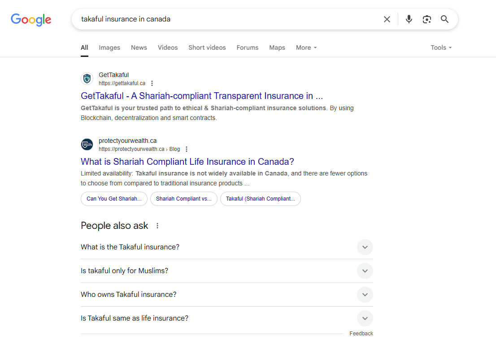
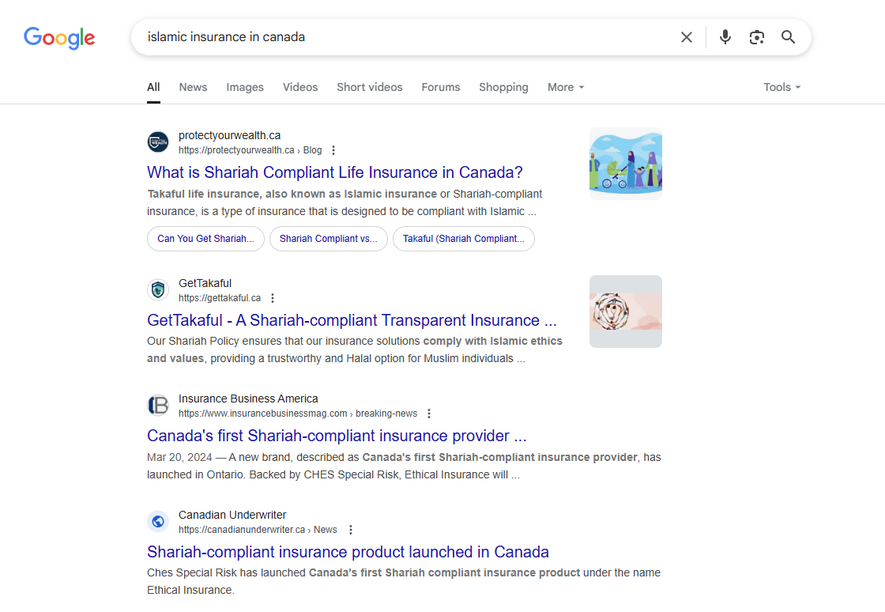
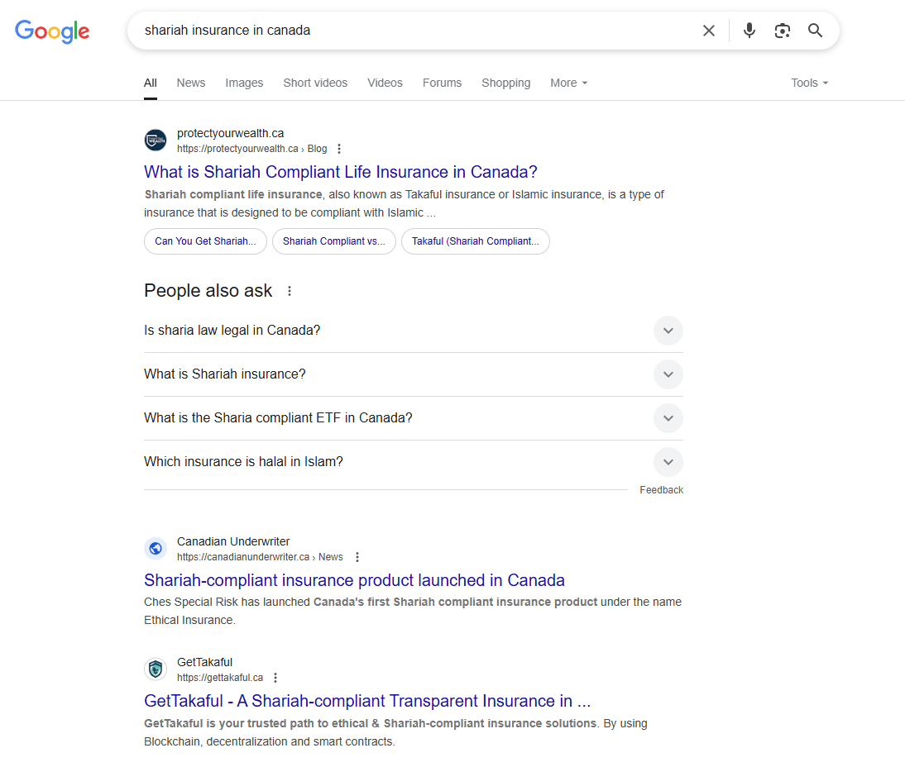

#1
Ranking for "takaful insurance in canada"
#1
Ranking for "shariah insurance in canada"
10+
High-intent keywords ranking
5+
Blog articles published
Higher
Organic discovery of landing pages
Lower
Bounce rate with increased blog dwell time
National
Attention from users across Canada during MVP



Objective
Build organic authority in the niche space of Islamic finance and insurance. GetTakaful was a new player in the Canadian market, and they needed to be found by people searching for Shariah-compliant insurance options.
Strategy
- Researched long-tail keywords like "Islamic insurance in Canada", "Shariah insurance in Canada", and "Takaful insurance in Canada"
- Created content pillars focused on Islamic finance education and product explainers
- Performed competitor analysis on key players in the Canadian halal insurance space
- Added schema markup, optimized mobile responsiveness, and focused on blog-based traffic drivers
Execution
This was a very specific niche with low competition but high intent from searchers. The people looking for Islamic insurance in Canada already knew what they wanted. They just could not find the right provider. I started by mapping out every keyword variation that a potential customer might search. From there, I built a content plan around education. The blog articles covered topics like the role of a Shariah Advisory Board, the relationship between Zakat and Takaful, Ramadan financial planning, whether travel insurance can be halal, and a complete guide to Takaful insurance. Each article was optimized for search and linked back to the main product pages. Schema markup was added across the site, and I cleaned up the mobile experience to make sure nothing was blocking conversions. Even during the MVP phase, the organic strategy was pulling in attention from users across the country.
Want results like this?
Send me your account and I'll tell you what I'd change first. No cost, no pitch.
Get a free audit →